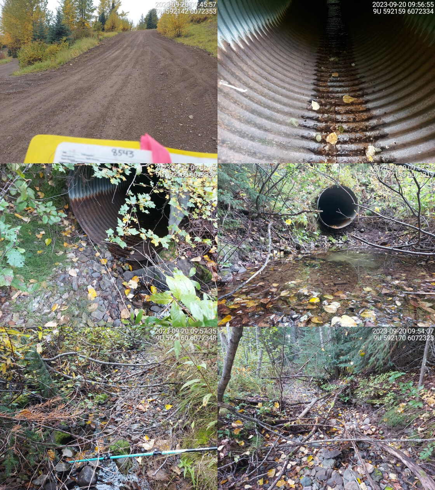

Tributary to McDonell Lake - 8543 - Appendix
Site Location
PSCIS crossing 8543 on Tributary to McDonell Lake is located approximately 0.5km upstream of the McDonell Lake, on the most eastern side of the lake. The site is located at kilometer 23 of McDonell Lake FSR, which at the crossing location is the responsibility of the Wetzinkwa Community Forest Corporation.
Background
At crossing 8543, Tributary to McDonell Lake is a second order stream with an upstream watershed area of approximately 4.6km2. The elevation of the watershed ranges from a maximum of 1189m to 844m at the crossing (Table 5.27).
The crossing was originally assessed with a fish passage assessment by Timber Sales Manager Skeena in 2010 with a recommendation for fish sampling and replacement with an open bottomed structure. Upstream of the crossing, rainbow trout and dolly varden have been documented in the past (Norris [2018] 2024; MoE 2024b).
fpr::fpr_table_wshd_sum(site_id = my_site) %>%
fpr::fpr_kable(caption_text = paste0('Summary of derived upstream watershed statistics for PSCIS crossing ', my_site, '.'),
footnote_text = 'Elev P60 = Elevation at which 60% of the watershed area is above',
scroll = F)| Site | Area Km | Elev Site | Elev Max | Elev Median | Elev P60 | Aspect |
|---|---|---|---|---|---|---|
| 8543 | 4.6 | 844 | 1189 | 1067 | 1048 | S |
| * Elev P60 = Elevation at which 60% of the watershed area is above |
A summary of habitat modelling outputs is presented in Table 5.28. A map of the watershed is provided in map attachment 093L.117.
| Habitat | Potential | Remediation Gain | Remediation Gain (%) |
|---|---|---|---|
| ST Network (km) | 5.5 | 5.2 | 95 |
| ST Lake Reservoir (ha) | 0.0 | 0.0 | – |
| ST Wetland (ha) | 0.0 | 0.0 | – |
| ST Slopeclass03 Waterbodies (km) | 0.0 | 0.0 | – |
| ST Slopeclass03 (km) | 0.0 | 0.0 | – |
| ST Slopeclass05 (km) | 0.0 | 0.0 | – |
| ST Slopeclass08 (km) | 3.5 | 3.5 | 100 |
| ST Spawning (km) | 0.0 | 0.0 | – |
| ST Rearing (km) | 0.0 | 0.0 | – |
| CH Spawning (km) | 0.0 | 0.0 | – |
| CH Rearing (km) | 0.0 | 0.0 | – |
| CO Spawning (km) | 0.0 | 0.0 | – |
| CO Rearing (km) | 0.0 | 0.0 | – |
| CO Rearing (ha) | 0.0 | 0.0 | – |
| SK Spawning (km) | 0.0 | 0.0 | – |
| SK Rearing (km) | 0.0 | 0.0 | – |
| SK Rearing (ha) | 0.0 | 0.0 | – |
| * Model data is preliminary and subject to adjustments. |
Stream Characteristics at Crossing
At the time of the survey in 2023, PSCIS crossing 8543 was un-embedded, non-backwatered and ranked as a barrier to upstream fish passage according to the provincial protocol (MoE 2011) (Table 5.29). The culvert was in poor condition with holes in the bottom and had a 0.5m outlet drop.
| Location and Stream Data |
|
Crossing Characteristics | – |
|---|---|---|---|
| Date | 2023-09-20 | Crossing Sub Type | Round Culvert |
| PSCIS ID | 8543 | Diameter (m) | 1.2 |
| External ID | – | Length (m) | 14 |
| Crew | MW JO RB | Embedded | No |
| UTM Zone | 9 | Depth Embedded (m) | – |
| Easting | 592142 | Resemble Channel | No |
| Northing | 6072357 | Backwatered | No |
| Stream | Tributary to McDonell Lake | Percent Backwatered | – |
| Road | McDonell Lake FSR | Fill Depth (m) | 1 |
| Road Tenure | Wetzinkwa Community Forest Corporation | Outlet Drop (m) | 0.5 |
| Channel Width (m) | 1.8 | Outlet Pool Depth (m) | 0.8 |
| Stream Slope (%) | 5 | Inlet Drop | No |
| Beaver Activity | No | Slope (%) | 3 |
| Habitat Value | Medium | Valley Fill | Deep Fill |
| Final score | 36 | Barrier Result | Barrier |
| Fix type | Replace Structure with Streambed Simulation CBS | Fix Span / Diameter | 3 |
| Photos: From top left clockwise: Road/Site Card, Barrel, Outlet, Downstream, Upstream, Inlet. | |||
| Comments: Small trickle in stream, very little flowing water. Stream runs halfway down culvert from inlet and then flows through holes underneath culvert. Stream gets wider upstream of crossing. Fish caught in the past above and below culvert. Deep outlet pool.. 09:49:51 |
Stream Characteristics Downstream
The stream was surveyed downstream from crossing 8543 for 160m (Figure 5.24). The stream was dry at the time of the survey. Total cover amount was rated as moderate with overhanging vegetation dominant. Cover was also present as small woody debris, large woody debris, undercut banks, and deep pools.The average channel width was 2.4m, the average wetted width was 0.7m, and the average gradient was 2.8%.The dominant substrate was cobbles with gravels sub-dominant. There are historic dolly varden and rainbow trout observations just downstream of the crossing in the FISS database. The habitat was rated as low value for salmonid rearing and spawning.
Stream Characteristics Upstream
The stream was surveyed upstream from crossing 8543 for 450m (Figure 5.25). Total cover amount was rated as trace with deep pools dominant. Cover was also present as small woody debris, large woody debris, undercut banks, and overhanging vegetation.The average channel width was 3.2m, the average wetted width was 1.2m, and the average gradient was 5.9%.The dominant substrate was cobbles with gravels sub-dominant. The stream had intermittent dewatering with isolated pools to 60 cm deep spaced every 30 to 40 m. The stream channel was entrenched in the valley with large amounts of mobile angular cobbled substrate throughout. Fish were observed in multiple isolated pools up to 300m upstream of the crossing, and there is a historic dolly varden observation just upstream of the crossing in the FISS database. The habitat was rated as low for salmonid rearing and spawning. There is a FISS obstacle noted as a cascade just upstream of crossing 8543 but no permanent natural barriers were observed during the survey.
Structure Remediation and Cost Estimate
Should restoration/maintenance activities proceed, replacement of PSCIS crossing 8543 with an embedded culvert (streambed simulation) (3m span) is recommended. Although preliminary - a rough cost of the work is estimated at $100,000.
Conclusion
The culvert at crossing 8543 was in bad condition with holes in the bottom and had a significant 0.5m outlet drop. The crossing ranked as a barrier to fish passage. There are historic fish observations both upstream and downstream of the crossing in the FISS database and surveyors observed fish upstream of the crossing during the assessment, suggesting this stream provides habitat suitable for rearing and spawning. Therefore, we recommendation electrofishing above and below the crossing to provide insight into fish community composition and density to help further inform prioritization.
Although there is a FISS obstacle noted as a cascade just upstream of crossing 8543, no permanent natural barriers were observed during the survey.
tab_hab_summary %>%
filter(Site == my_site) %>%
# select(-Site) %>%
fpr::fpr_kable(caption_text = paste0('Summary of habitat details for PSCIS crossing ', my_site, '.'),
scroll = F) | Site | Location | Length Surveyed (m) | Channel Width (m) | Wetted Width (m) | Pool Depth (m) | Gradient (%) | Total Cover | Habitat Value |
|---|---|---|---|---|---|---|---|---|
| 8543 | Downstream | 160 | 2.4 | 0.7 | 0.6 | 2.8 | moderate | Low |
| 8543 | Upstream | 450 | 3.2 | 1.2 | 0.4 | 5.9 | trace | Low |
my_photo1 = fpr::fpr_photo_pull_by_str(str_to_pull = 'ds_typical_2')
my_caption1 = paste0('Typical habitat downstream of PSCIS crossing ', my_site, '.')Figure 5.24: Typical habitat downstream of PSCIS crossing 8543.
my_photo2 = fpr::fpr_photo_pull_by_str(str_to_pull = 'us_typical_1')
my_caption2 = paste0('Typical habitat upstream of PSCIS crossing ', my_site, '.')Figure 5.25: Typical habitat upstream of PSCIS crossing 8543.
my_caption <- paste0('Left: ', my_caption1, ' Right: ', my_caption2)
knitr::include_graphics(my_photo1)
knitr::include_graphics("fig/pixel.png")
knitr::include_graphics(my_photo2)